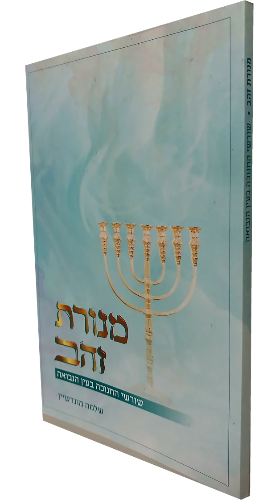

שורשי החנוכה בעין הנבואה – לימוד יומי בספר "מנורת זהב" לקראת חנוכה.
מסע אל שורשיו הרוחניים של החנוכה, מתוך עיון בדברי נביאי ראשית תקופת בית שני. בכל יום קטע לימוד של כמה עמודים, מז' בכסלו ועד א' בטבת (בלי שבתות) – וכך מסיימים את הספר עם סוף החנוכה.
- יום שלישיז'כסלויום 1פתיחהעמ' 9–12 בספרללימוד ←
- יום רביעיח'כסלויום 2חידת הנבואה · פירוש המלבי"םעמ' 13–18 בספרללימוד ←
- יום חמישיט'כסלויום 3מלחמת טבע ומלחמת נס · "מבור אין מים בו"עמ' 19–23 בספרללימוד ←
- יום שישיי'כסלויום 4יציאת מצרים ובית ראשון · "ויהי בשלח"עמ' 24–27 בספרללימוד ←
- יום ראשוןי"בכסלויום 5"אלהים הבין דרכה" · גלות בבל ובית שני (א)עמ' 28–31 בספרללימוד ←
- יום שניי"גכסלויום 6גלות בבל ובית שני – בניין קומת העצמאות (ב)עמ' 32–34 בספרללימוד ←
- יום שלישיי"דכסלויום 7נבואת חגי: א' אלול · הושענא רבהעמ' 35–39 בספרללימוד ←
- יום רביעיט"וכסלויום 8הנבואה בכ"ד כסלו – "היום אשר יסד היכל ה'"עמ' 39–41 בספרללימוד ←
- יום חמישיט"זכסלויום 9נבואת מלאכי: תוכחה לעומת העברעמ' 42–45 בספרללימוד ←
- יום שישיי"זכסלויום 10תוכחה לעומת העתיד – "בין עובד אלהים"עמ' 46–48 בספרללימוד ←
- יום ראשוןי"טכסלויום 11מבית שני עד עקבתא דמשיחאעמ' 49–54 בספרללימוד ←
- יום שניכ'כסלויום 12סיכום · נבואת המנורה בזכריה: בשורת הגאולהעמ' 54–59 בספרללימוד ←
- יום שלישיכ"אכסלויום 13יהושע הכהן הגדולעמ' 60–64 בספרללימוד ←
- יום רביעיכ"בכסלויום 14נבואת המנורהעמ' 65–67 בספרללימוד ←
- יום חמישיכ"גכסלויום 15חזון דניאל: פסוקי החזיון · העזות הנמריתעמ' 71–74 בספרללימוד ←
- יום שישיכ"דכסלויום 16כנפי העוף · ארבעת הראשיםעמ' 74–76 בספרללימוד ←
- יום ראשוןכ"וכסלויום 17חזון הצפיר והשעיר (א)עמ' 77–80 בספרנר שני של חנוכהללימוד ←
- יום שניכ"זכסלויום 18חזון הצפיר והשעיר (ב)עמ' 81–83 בספרנר שלישי של חנוכהללימוד ←
- יום שלישיכ"חכסלויום 19החזיון על נהר החדקל: פתיחה · שיטת רש"יעמ' 84–85 בספרנר רביעי של חנוכהללימוד ←
- יום רביעיכ"טכסלויום 20שיטת אברבנאל ומלבי"םעמ' 86–89 בספרנר חמישי של חנוכהללימוד ←
- יום חמישיל'כסלויום 21השקר החיצוני · אספקלריא של גלות ושל תקומהעמ' 89–91 בספרנר שישי של חנוכהללימוד ←
- יום שישיא'טבתיום 22"ברית קודש" – סיום החוברתעמ' 91–92 בספרנר שביעי של חנוכהללימוד ←